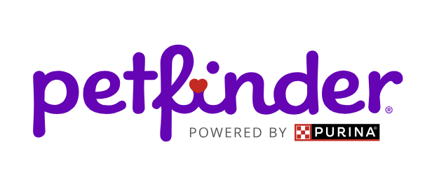
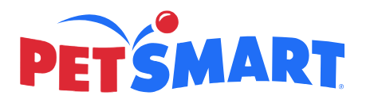

The purpose of petfinder.com is to help both people and animals by allowing you to find and adopt a cat or a dog. It provides locations with adoption centers and provides information on what animals are there. It also allows you to adopt various other types of pets, including birds, guinea pigs, horses, rabbits, and reptiles. It also gives information about the animals it allows you to adopt so that you can care for them after you adopt them. Rent A Pet is proud to work with Petfinder in giving homes to animals who need homes. They give us many of the animals we use, and then we allow various people to rent them. We will continue to cooperate with Petfinder for years to come.
The purpose of chewy.com is to sell various types fo animals and resources to help care for said animals. They sell pets, food for those pets, supplies to help care for them, and much more. They have information concerning how to care for the various types of animals they associate with, and they have information on various health services to help pets with different conditions. Rent A Pet is proud to work with Chewy. We get much of our information and animals from them, and they are also very helpful in providing us with knowledge on where to go when some of the pets we send out get sick. We will continue to cooperate with Chewy for years to come.
The purpose of Adopt a Pet is to provide a medium through which anyone can adopt an animal and purchase the resources necessary to help raise them. It has detailed information on how to raise cats and dogs, and it allows you to rehome an animal that you don't want to continue raising. Additionally, it provides information on the ways that you can help homeless pets and make a difference. Rent A Pet is proud to work with Adopt a Pet. When it comes to raising animals that aren't in the midst of being rented, much of our information and advice comes from Adopt a Pet. We will continue to work with Adopt a Pet for years to come.
The purpose of PetSmart is to give you easy access to purchase various types of animals, various brands of pet food, and various services for your pet. Through the many resources provided by PetSmart, you can give your pets whatever they need, whether it be help with any conditions they have, food that they need to survive, services to benefit the pet's well being, or information about how to raise your pets. Rent A Pet is proud to work with PetSmart. They provide much of the food that we use to feed our animals when they are not being cared for. We will continue to cooperate with PetSmart for years to come.
Ther purpose of PetPlace is to help you as you strive to give your pet the best life that you can. PetPlace provides substantial amounts of information concerning how to care for your pet, how to train your pet to behave well, how to know when your pet is sick, and what to know about the particular breed that your pet is. PetPlace has many vet-approved articles about how to properly care for your pet, and it provides information about pet insurance and the expenses of having a pet. Rent A Pet is proud to work with PetPlace. Their website is where we get the majority of our information on how to care for our pets and how to train them so that they will behave well when being rented by our customers. PetPlace has been very useful in helping us to raise our pets and keep them safe. We will continue to cooperate with PetPlace for years to come.